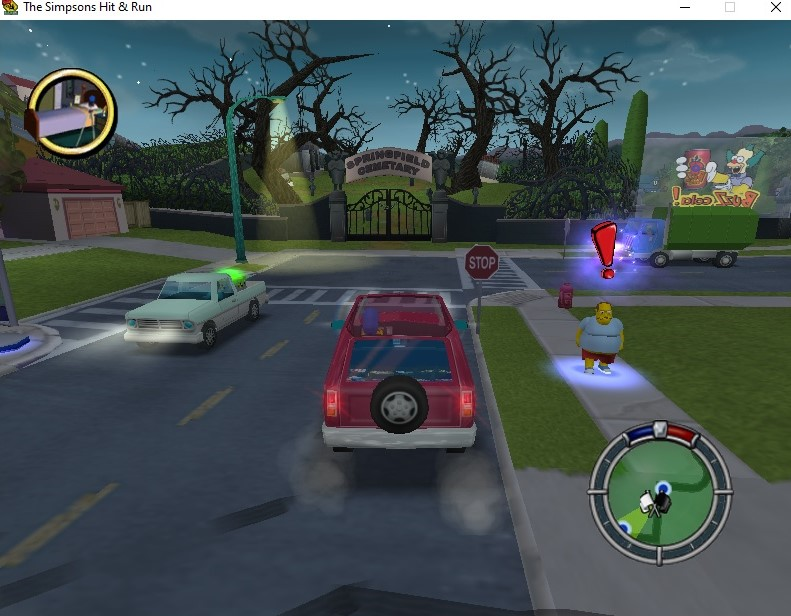
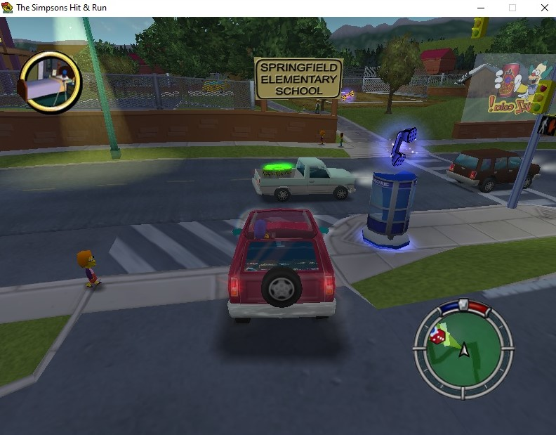
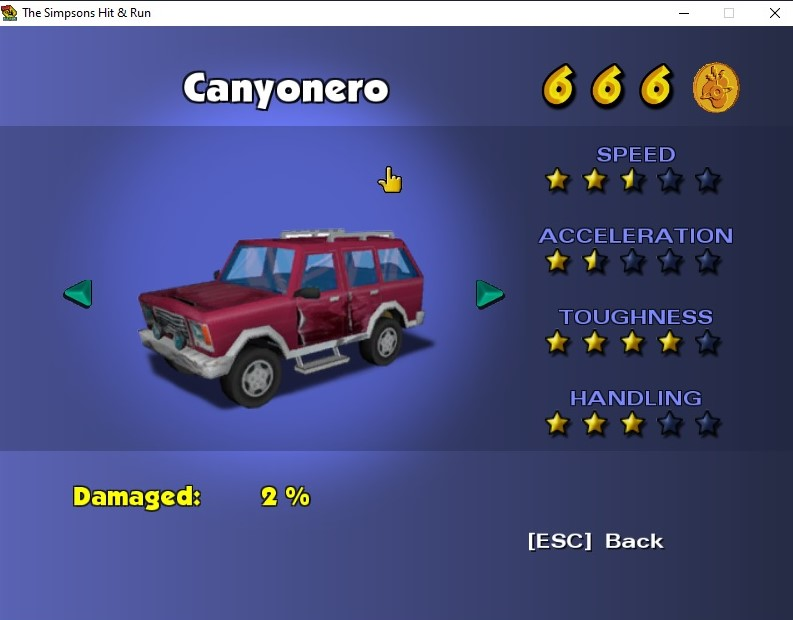
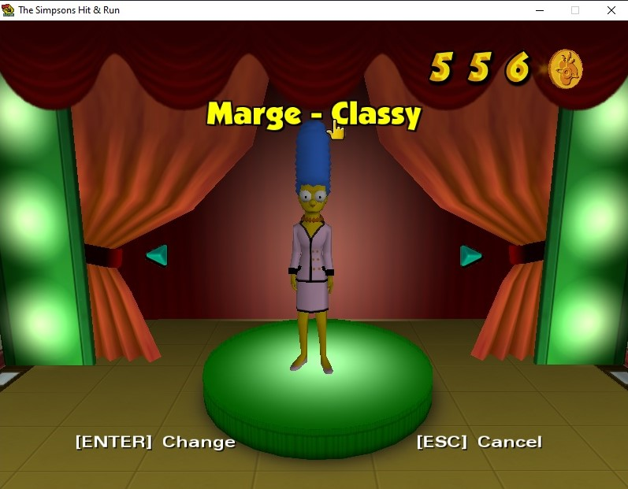
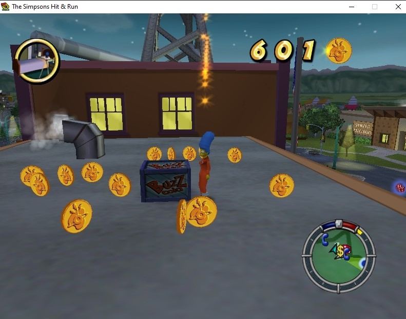

Springfield: The Simpsons Hit & Run
Simpsons Hit & Run es un juego de la serie popular animada "Los Simpsons" este juego esta ambientado en la ciudad de Springfield, la misma de la serie. En los diferentes niveles eres un personajes diferente y se situan en la misma ciudad pero en diferentes lugares de esta
Casa Simpson


La Casa Simpson se encuntra en el nivel 1 y 4, en esta puedes entrar y conseguir ropa nueva al igual que monedas en su patio
Escuela Primaria de Springfield


Afuera de la escuela se encuentra una mision para poder conseguir un auto neuvo, tambien puedes entrar al lugar y cambiar de ropa
Kwik-E-Mart


La tienda de Apu puedes es otro de los lugares donde puedes entrar, ahí se encuentra él y uno de los personajes congelado, tambien te puedes cambiar de ropa. Fuera del Kwik-E-Mart se encuentra una camioneta de cerveza Duff que te ayudara a subir al techo de esta tienda y conseguir más monedas
Planta Nuclear


La Planta Nuclear donde trabaja Homero Simpson se encuentra hasta el otro lado de Springfield, puedes llegar y entrar por diferentes lugares como La Casa del Sr. Burns, ahí se encuentra tambien la cabina de Homero y más monedas por ganar. Puedes entrar con tu auto o conseguir uno con los telefonos que se encuentran dentro de la planta
Casa Sr. Burns


En la Casa del Sr. Burns esta cerca de la Planta Nuclear, puedes entrar desde la Planta o desde la entrada pricipal, ahí se encuentran monedas y un juego gingante de ajedrez. Puedes entrar con tu auto o conseguir uno desde adentro ya que ahí tambien se encuentran telefono
Reglas del Juego
Simpsons Hit & Run es un juego de la serie popular animada "Los Simpsons" este juego esta ambientado en la ciudad de Springfield, la misma de la serie. En los diferentes niveles eres un personajes diferente y se situan en la misma ciudad pero en diferentes lugares de esta


En el juego puedes explorar las calles de Springfield, en donde puedes encontrar lugares de la serie como las Hamburguesas Krusty, Lard Lad Donuts, entre otras.


El objetivo del juego es completar las misiones que te pediran diferentes personajes de la serie para así poder avanzar de nivel.
 

Estas misiones las puedes completar usando diferentes autos, los puedes cambiar en los telefonos y tambien puedes conseguir nuevos ya sea comrandolos o ganandolos por medio de carreras

Tambien puedes comprar y cambiar de ropa en los signos $ que comunmente estan dentro de tiendas o casas
